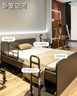
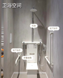
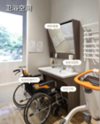
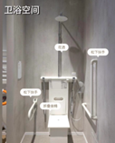
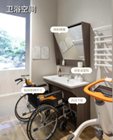
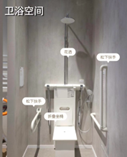
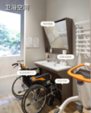

护老者培育
我们将派社工通过入户走访，详细记录服务对象的居家环境、成员关系、家庭经济等信息，快速将政策与需要适老化改造的服务对象精准对接，确保符合条件的对象能够及时了解相关政策并获得改造机会。在梳理总和问题过后我们将链接改造团队，根据老人的身体状况和居住环境，为老人的家庭进行适老化改造，如安装扶手、改造卫生间、调整家具摆放等，提高老人居住的安全性和便利性。并且在改造过程中充当协调者和沟通者的角色，协调解决可能出现的矛盾，确保改造工作顺利进行。社工还需要与施工团队一起入户实地勘察，根据老年人的身体状况、日常活动能力、居家环境现状等因素，制定个性化的改造方案，确保改造贴合老年人的实际需求。在改造结束后，我们仍会陪同户主进行验收并且与改造团队对接后续服务。
“适老化”改造
组织将派社工调查社区内可用于护老者培训的资源，包括医疗机构、志愿者团队、专业护理机构等。根据需求评估结果，结合专业知识和实践经验，社会工作者与专业培训老师一起精心设计培训课程，课程内容涵盖基本护理技能，如老年人的生活照料（包括协助进食、沐浴、翻身等）、常见疾病护理、康复护理等，并注重加入心理关怀方面的内容。 课程内容会根据护老者的学习进度和反馈进行动态调整，以保证培训的有效性。对于非孤寡人群，组织将着重对老人的家属或家庭保姆提供护理技能培训。对于孤寡老人，组织将与家政公司建立合作关系，为孤寡老人链接照顾者资源，组织为公司筛选并提供客源，与家政公司协商“个性化服务”培训计划，并为经济情况不好的老人争取合适的服务与照料。培训结束后，社会工作者会对护老者进行定期回访，了解他们在实际照顾工作中的应用情况和遇到的新问题，对于新出现的问题，提供进一步的指导和支持。

 




